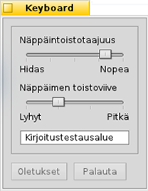
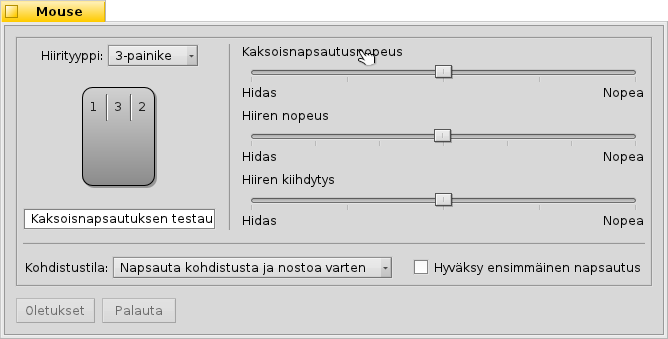

| Hakemisto |
|
Näppäimistöasetukset Hiiriasetukset Levyhiiriasetukset |
 Syötteet
Syötteet
| Työpöytäpalkki: | ||
| Sijainti: | /boot/system/preferences/Input | |
| Asetukset: | ~/config/settings/Keyboard_settings ~/config/settings/Mouse_settings ~/config/settings/Touchpad_settings |
Syöteasetukset yhdistävät aiemmat erilliset näppäimistö-, hiiri- ja levyhiiripaneelit sekä kaikki muut syötelaitteet, jotka järjestelmä tunnistaa. Laitteet on lueteltu vasemmalla samalla kun paneeli oikealla vaihtuu valitun laitteen saatavilla olevien asetusten mukaiseksi.
 Näppäimistöasetukset
Näppäimistöasetukset

Asettaa näppäintoistotaajuuden ja viipeen, joka kuluu pidettäessä näppäintä alhaalla aina siihen saakka kun toisto alkaa. Voit testata asetuksiasi kirjoitustestausalueella alhaalla.
| nollaa kaikki oletusarvoihin. | ||
| tuo takaisin asetukset, jotka olivat voimassa Näppäimistöasetukset-sovellusta käynnistettäessä. |
Hiiriasetukset

Aseta ensimmäiseksi hiirityyppi: 1-, 2-, tai 3-painikkeinen hiiri. Voit simuloida toista (oikeaa) hiiren painiketta pitämällä alhaalla CTRL-näppäintä, kun napsautat vasemmalla hiiren painikkeella. Kolmatta (=keskimmäinen) hiiren painiketta voidaan simuloida pitämällä alhaalla CTRL- ALT-näppäimiä ja napsauttamalla hiiren vasemmalla painikkeella.
Voit järjestää hiiren painikkeet napsauttamalla niitä ja valitsemalla niiden uuden merkityksen ponnahdusvalikosta.
Oikealla olevilla liukukytkimillävalitset kaksoisnapsautusnopeuden, hiiren nopeuden ja hiiren kohdistimen kiihtyvyyden. Kaksoisnapsautuksen testausalueella voidaan tarkistaa, että vastaako kaksoisnapsautuksen nopeus omaa mieltymystäsi: jos sanan kaksoisnapsautus ei valtse sitä, nopeus on liian suuri (tai sinun on totuttava napsauttelemaan nopeammin...).
Käytössä on kolme , jotka määrittelevät, kuinka ikkuna reagoi napsautukseen:
| Tämä on oletusasetus: napsautat ikkunaa ja saat siihen kohdistuksen ja se nousee päällimmäiseksi. | ||
| Ikkunan napsauttaminen antaa sille kohdistuksen, mutta ei nosta sitä automaattisesti päällimmäiseksi. Jotta näin tapahtuisi, on napsautettava joko otsikkopalkkia tai ikkunarajaa tai napsauttaa minne tahansa pitämällä samanaikaisesti ikkunanhallintanäppäimiä CTRL ALT painettuna. | ||
| Ikkuna hiiren kohdistimen alla saa kohdistuksen automaattisesti. Itse asiassa se nostaa sen päällimmäiseksi, kuten kuvaillaan |
-aktivoiminen auttaa sinua niin että ei tarvitse ensin kohdistaa hiiren kohdistinta ei-aktiiviseen ikkunaan tarkoituksena napsauttaa käyttöliittymäkomponenttia kuten painiketta tai valikkoa. Tämä valinta sisältää riskin esimerkiksi sulkea ikkuna napsauttamalla vahingossa Sulje-painiketta kun tarkoitus oli napsauttaa ikkunaotsaketta. Toisaalta se nopeuttaa työnkulkuasi merkittävästi.
Kaikki asetukset toteutetaan välittömästi.
| nollaa kaikki oletusarvoihin. | ||
| tuo takaisin asetukset, jotka olivat voimassa Hiiriasetukset-sovellusta käynnistettäessä. |
Levyhiiriasetukset

Raahaamalla levyhiiriesittelyn punaisia pystysuoria tai vaakasuoria linjoja asetat vieritysalueen (lievästi punoittava harmaata yleistä kosketusaluetta vasten). Siirtämällä sormeasi tuolla levyhiiren alueella siirrät ikkunan vierityspalkkeja vastaavasti.
Oikealla on liukukytkimet yleistä kiihtyvyyttä ja pystysuoran ja vaakasuoran vierityksen kiihtyvyyttä varten.
Kiihtyvyysasetukset määräävät, kuinka paljon nopeammin vierityspalkit liikkuvat, jos vaihdat vieritysalueelta hyvin nopeasti. Vieritysnopeus ohjaa yleistä nopeutta kun vieritysaluetta käytetään "normaalilla" tavalla.
Levyhiirigrafiikan alla on tarkistusruudu, joilla otetaan käyttöön "Kaksisormivieritys" pystysuorana ja vaakasuorana vierityksenä. Siirrä kaksi sormea rinnakkain pystysuoraan tai vaakasuoraan ikkunan vierityspalkkien siirtämiseksi. Ainakin minulla se toimii parhaiten yhdellä sormella vasemmassa ja yhdellä sormella oikeassa kädessä.
Jos tämän ominaisuuden käyttäminen tuntuu mukavalta, voit korvata sillä vieritysalueiden asetukset ja käyttää sen sijaan koko levyhiirialuetta normaaliin navigointiin.
Alimmaisen on liukukytkin naputusnapsauksen herkkyyden asettamiseksi. Jos naputuksiasi ei huomioida, kasvata erottelukykyä. Jos järjestelmä rekisteröi naputuksia koko ajan vaikka haluat vain siirtää hiiren osoitinta, yritä pienentää erottelukykyä.
| nollaa kaikki oletusarvoihin. | ||
| tuo takaisin asetukset, jotka olivat voimassa Levyhiiriasetukset-sovellusta käynnistettäessä. |
Ja vielä vihje, joka ei liity Levyhiiriasetuksiin vaan sopii yleisesti aiheeseen:
Tiesitkö, että voit raahata ja pudottaa vain käyttämällä levyhiirtä, toisin sanoen käyttämättä hiiren painikkeita? Tee vain kaksoisnapsautus nostamatta sormea sekunnin napsautuksen jälkeen. Poimittu ylös-kuvake liimautuu hiiren kohdistimeen ja voit raahata sitä ympäriinsä siirtämällä sormeasi. Sormen nostaminen pudottaa kuvakkeen.
Jos sormesi tavoittaa levyhiiren reunan kuvaketta raahatessa, mutta hiiren kohdistin ei ole vielä ehtinyt näytön reunaan, kuinka jatkan kuvakkeen raahaamista? Heti kun nostan sormeni, kuvake putoaa.
Laitteistostasi riippuen on olemassa näppärä ominaisuus: jätä vain sormesi nostamatta levyhiiren reunalla. Hiiren kohdistin jatkaa liikkumista autopilotilla.